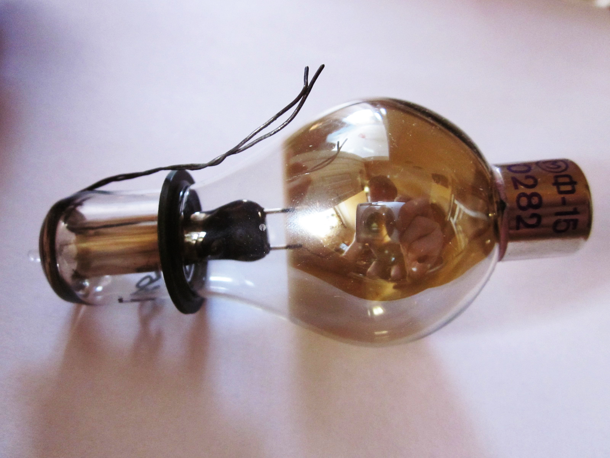

<!DOCTYPE HTML>
<!-- ПОдключение кодировки -->
<meta charset="utf-8">
<!-- Подключение файла стилей CSS -->
<link href="../../../styles.css" rel="stylesheet">
<!-- Строка, которая будет отображаться в заголовке HTML страницы -->
<title>Приборы/title>


    <body>
        <header>
            <div class=caption>
                <span> Приборы </span>
            </div>
            <div class="buttonback">
                <a href="../general_device.html">Назад </a>
            </div>
            <div class="buttonhome">
                <a href="../../../index.html"> Домой </a>
            </div>
        </header>
    </body>


    <div class="single-academic">
        <div class="single-academic-left">
            

            <div class="single-academic-bottom">
                <span class="single-academic-bottom-title">
                Фотоэлемент
            </span>
                <span class="single-academic-bottom-subtitle">
                <!-- 384 – 322 гг. до н. э. -->
            </span>
            </div>
        </div>
        <div class="single-academic-right">
            <div class="single-academic-text">
                <span class="single-academic-text-title">
                <!-- Биография -->
            </span>

                <span>
                &nbsp;  Фотоэлемент – это электронный прибор, который преобразует энергию фотонов в электрическую энергию. Подразделяются на электровакуумные и полупроводниковые фотоэлементы
            </span>
                <span>
                &nbsp;  История фотоэлементов берет начало в 1839 г., когда французский физик Э. Беккерель открыл фотогальванический эффект. 
            </span>
                <span>
               &nbsp;	В 1883 г. Ч. Фриттс изготовил фотоэлементы из селена, которые преобразуют свет в видимом спектре в электричество и имеют КПД 1-2%.
            </span>
                <span>
                &nbsp;  В начале 50-х гг. ХХ в. был изобретен метод Чохральского, который применяется для выращивания кристаллического кремния.
            </span>
                <span>
                &nbsp;  В 1954 г. в лаборатории компании "Bell Telephone" синтезировали силиконовый фотоэлектрический элемент с КПД 4%, в дальнейшем эффективность достигла 11%.
            </span>
                <span>
                &nbsp;  В 1958 г. небольшие фотоэлектрические батареи питали радиопередатчик американского космического спутника «Авангард». Вообще, космические исследования сыграли важную роль в развитии фотоэлементов.
            </span>
                <span>
                &nbsp;  Во время нефтяного кризиса 1973-74 гг. сразу несколько стран запустили программы по использованию фотоэлементов, что привело к установке и опробованию свыше 3100 фотоэлектрических систем только в Соединенных Штатах. Многие из них до сих пор находятся в эксплуатации.
            </span>
            </div>